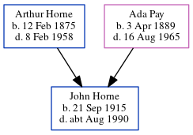

John Albert Horne 1915 - c1990
[ Home ] | [ Calendar ] | [ Surnames Index ] | [ Census Index ] | [ Family History ]A railroad carriage clerk and the child of Arthur Horne (a smack owners's assistant) and Ada Pay, John Horne, the second cousin twice-removed on the father's side of Nigel Horne, was born in Ramsgate, Kent, England on Sep 21, 19151,2,3,4.
During his life, he was living at 12 King Edward Road in Ramsgate on Jun 19, 19211 and on Sep 29, 19392; at 5 Paragon Street in Ramsgate in 19538 and in 19555; at 26 Lorne Road, St Lawrence, Thanet, Kent, England in 19639 and in 19656; and at 4 Stanley Road in Ramsgate in 19747.
He died c. Aug 1990 in Thanet4.
Parents
- Arthur Albert was born on Feb 12, 1875
- Ada Caroline Eleanor was born on Apr 3, 1889
Citations
- 1921 Census Of England & Wales - Findmypast (was age 5 and the son of the head of the household)
- 1939 Register - Findmypast (was the son of the head of the household)
- England & Wales births 1837-2006 - Findmypast
- England & Wales deaths 1837-2007 - Findmypast
- 1955 Kelly's Thanet Directory
- 1965 Kelly's Thanet Directory
- 1974 Kelly's Thanet Directory
- 1953 Kelly's Thanet Directory
- 1963 Kelly's Thanet Directory
Media
1955 Kelly's Thanet Directory

1965 Kelly's Thanet Directory

1974 Kelly's Thanet Directory

1953 Kelly's Thanet Directory

1963 Kelly's Thanet Directory

1939 Register Transcription - TNA-R39-1767-1767C-005-17
England & Wales births 1837-2006 - BMD/B/1915/4/AZ/000634/022
England & Wales deaths 1837-2007 - BMD/D/1990/7/77920311
1939 Register Transcription - TNA-R39-1767-1767C-005-15
Royal Artillery attestations 1883-1942 Image - GBM-ROYALART-1596601-1597600-00005
1921 Census of England & Wales - GBC/1921/RG15/04480/0263/06
Family Tree
Generated by ged2site. Last updated on Jun 11, 2024